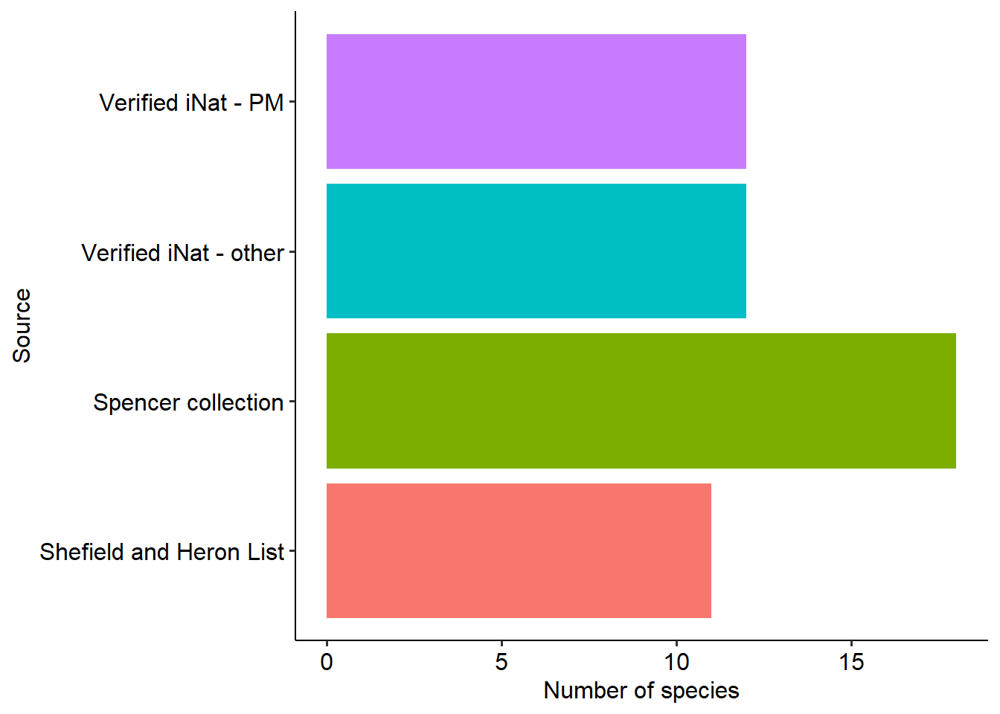

Pacific Maritime Big Book of Bees
Big Book of Bees!
This book features annotations of bees of the PNW. Images have been collected from iNaturalist, and special thanks to Spencer Collection for allowing us to reproduce their specimen images as references for this book
How to use:
- Look up your favourite bees in the gallery
- Compare with your own observations to help identify species
- Click any image to be taken to the database source
Bees are organized by genus.
Last seen
This map shows the 10 most recent observations on GBIF for family Apidae. Downloaded Nov 23 2023.
Double click any genus to isolate it on the map.
Summary of Andrena information
Kingdom: Animalia; Phylum: Arthropoda; Class Hymenoptera; Superfamily: Apoidea; Family: Andrenidae
52 species listed by Shefield and Heron (2018) including 11 with verified iNaturalist records plus one additional iNaturalist record of Andrena astragali (death camas mining bee) that was first documented in the Pacific Maritime in 2018.
When available, species information will be displayed with the following priority: 1. Verified on iNaturalist, and seen in Pacific Maritime 1. Verified on iNaturalist, and seen outside of the Pacific Maritime 1. Specimen available in the UBC Spencer Entomological Collection 1. Species listed on the Shefield and Heron List, but not otherwise observed
The Pacific Maritime has 53 documented species of Andrena.
